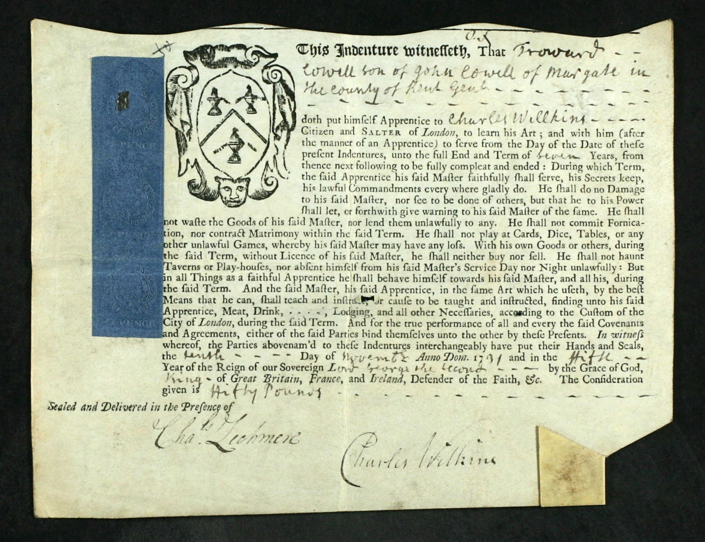
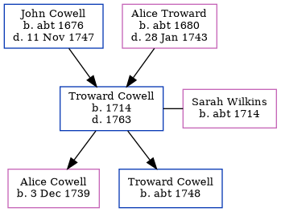

Troward Cowell 1714 - 1763
[ Home ] | [ Calendar ] | [ Surnames Index ] | [ Family History ]A cheesemonger and the child of John Cowell (a yeoman) and Alice Troward, Troward Cowell, the six times great-uncle of <a href="I1.html">Nigel Horne</a>, was born in Margate, Kent, England in 1714<span class="citation">1</span>, was baptized there on Jan 27, 1715 and married Sarah Wilkins (with whom he had 2 children: <a href="I1436.html">Alice Troward</a> and <a href="I3141.html">Troward</a>) at St Peter-upon-Cornhill Church, Cornhill, London, England on Jan 26, 1738<span class="citation">1</span> (Civil marriage in All Hallows, Barking, then parish marriage the next day at St Peter upon Cornhill). In 1755, he lived in at Tower Street, London. <p>He died in 1763 in London and was buried at All Hallows, Barking, London on Sep 24, 1763<span class="citation">2</span>.
Parents
- John was born c. 1676
- Alice was born c. 1680
Children
- Alice Troward was born on Dec 3, 1739
- Troward was born c. 1748
Citations
- London and Surrey, England, Marriage Bonds and Allegations, 1597-1921 Online publication - Provo, UT, USA: Ancestry.com Operations, Inc., 2011.Original data - Marriage Bonds and Allegations. London, England: London Metropolitan Archives. Surrey Marriage Bonds and Allegations records held by the London Metropolitan Archives,
- Greater London Burial Index - Findmypast
Notes
Made bankrupt 25 Nov 1755.
Media
Troward Cowell - Freedom of the City

Troward Cowell - Sarah Wilkins - marriage bond

Leeds Intelligencer - 2 Dec 1755

Greater London Burial Index Transcription - GBOR-LONDONBURIAL-618504
England Births & Baptisms 1538-1975 - R_883175908
Kent Baptisms - GBPRS/CANT/B/96203607
Kent Baptisms - GBPRS/CANT/B/96739428
Family Tree
Generated by Ged2Site. Last updated on Jul 20, 2025